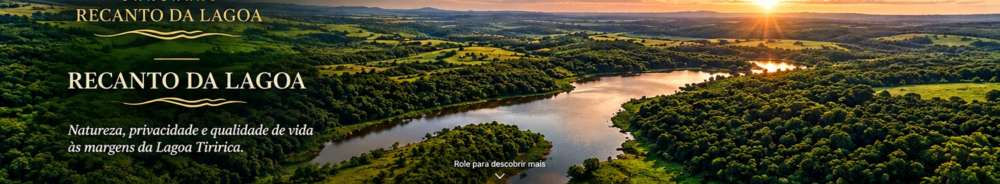
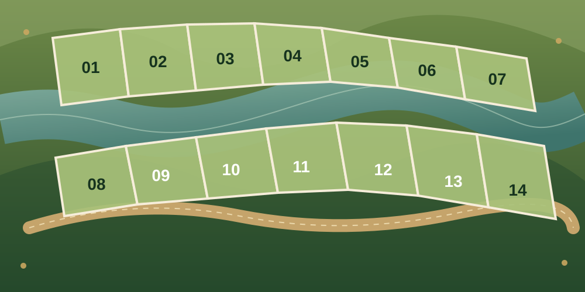

CHÁCARAS
Recanto da Lagoa
Natureza, privacidade e qualidade de vida
às margens da Lagoa Tiririca.
⌖ Pingo-d’Água / MG
Role para descobrir ↓de 2 hectares
Contato direto
com a natureza
14 chácaras
no total
Às margens
da Lagoa Tiririca
Seu espaço
para viver e relaxar
UM LUGAR PARA CHAMAR DE SEU
Um encontro com
a tranquilidade.
Um empreendimento exclusivo com 14 chácaras de 20.000 m² cada, em uma região especial de Pingo-d’Água, Minas Gerais. Um convite para desacelerar, aproveitar a natureza e criar momentos inesquecíveis ao lado da Lagoa Tiririca.
Conheça as chácaras →
ESCOLHA SEU ESPAÇO
Conheça as chácaras
Explore o mapa, veja a disponibilidade
e conheça cada unidade.
Mapa esquemático
Selecione uma chácara para ver os detalhes.

Ilustração conceitual para visualização. Não representa levantamento topográfico ou limites oficiais.
EXPLORE SEM SAIR DE CASA
Uma visita que começa
de onde você estiver.
Estamos preparando uma experiência de visita virtual 360° para você conhecer os caminhos, a paisagem e os detalhes do Recanto da Lagoa.
TOUR 360° EM PRODUÇÃOCENÁRIOS QUE INSPIRAM
Galeria de imagens
Um pouco da atmosfera do
Recanto da Lagoa.
Imagens ilustrativas de conceito. Substitua pelas fotografias reais e autorizadas do empreendimento antes da publicação comercial.
SEU PRÓXIMO CAPÍTULO
Seu espaço.
Seu tempo.
ONDE A NATUREZA TE ESPERA
Um lugar especial
em Minas Gerais.
O Recanto da Lagoa está localizado em Pingo-d’Água, Minas Gerais, às margens da Lagoa Tiririca.
Abrir localização no Google Maps ↗O ponto exato do empreendimento poderá ser atualizado quando as coordenadas oficiais forem disponibilizadas.VAMOS CONVERSAR?
O seu refúgio pode
começar com uma mensagem.
Fale diretamente com nossa equipe e tire suas dúvidas sobre disponibilidade, valores e visitas.